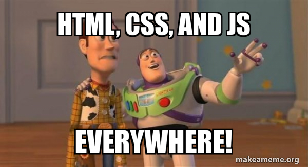

Chapitre 1: Pages web statiques⚓︎


Le cas le plus simple : la même page web pour tout le monde⚓︎

Nous allons tout d'abord considérer le cas où le serveur renvoie une page unique, identique pour tous les utilisateurs. De plus, l'utilisateur ne pourra pas agir sur sa page : il n'y a aucune interactivité. On parle de page statique.
Exemple de page statique côté serveur et côté utilisateur :
- cette merveille de page web.
- plus complète, mais tout aussi statique : cette page Wikipedia consacrée à Leslie Lamport.
1 Pages web en html pur⚓︎
Lorsque le client demande au serveur le contenu d'une page web, celui-ci lui renvoie, dans le cas le plus simple, une simple page html.
html est un langage dit « à balises ». Ce n'est pas à proprement parler un langage de programmation, mais plutôt un langage de description de contenu.
Il a été inventé en 1992 par Tim Berners-Lee. La version actuellement utilisée est le html5.
Exemple de page web minimale
<!DOCTYPE html>
<html lang='fr'>
<head>
<meta charset="utf-8">
<title>Un titre très original</title>
</head>
<body>
<p>Ceci est le texte introductif de ma page.</p>
<h1> Ceci est un titre de niveau 1 </h1>
Mais sans rien d'intéressant.
<h2> Ceci est un titre de niveau 2 </h2>
<ul>
<li> le début d'une liste indentée </li>
<li> la suite ... </li>
</ul>
<p>
Pour apprendre le fonctionnement des balises, voir <a href="https://developer.mozilla.org/fr/docs/Apprendre/HTML/Introduction_%C3%A0_HTML/Getting_started"> ici</a> par exemple !
</p>
</body>
</html>
Allez contempler ici le rendu de cette magnifique page et suivez le lien qui s'y trouve pour apprendre le fonctionnement des balises html.
Exercice 1
- Lire la page d'introduction à HTML de mozilla et réaliser les exercices d'apprentissage actif qui s'y trouvent.
- Création d'une page personnelle
- Puis créer un dossier contenant un fichier
mapage.htmlainsi qu'un fichierpage2.html. - Créer une page contenant une image et un lien vers le site du lycée et un lien vers une autre page.
- Puis créer un dossier contenant un fichier
- Indications:
- Vous pouvez utiliser l'éditeur de votre choix. Par exemple le logiciel Sublime Text installé au lycée (pour le lancer cliquez sur l'icône Windows puis commencez à taper Sublime au clavier) que vous pouvez aussi installer sur votre ordinateur personnel.
- Vous pouvez aussi utiliser un éditeur en ligne avec rendu instantané, du type https://www.w3schools.com/tryit/
<!DOCTYPE html>
<html lang='fr'>
<head>
<meta charset="utf-8">
<title>Ma première page</title>
</head>
<body>
</body>
</html>
- Capytale: 087b-5379747
Premières conclusions sur l'utilisation du html⚓︎
À retenir
- Pour créer une page web, on crée un fichier ayant l'extension
.html, qui pourra être ouvert dans le navigateur web simplement en faisant un double-clic dessus. - Chaque fichier HTML est constitué de balises.
- Les balises peuvent avoir plusieurs formes :
<balise> </balise>: balises en paires, elles s'ouvrent et se ferment pour délimiter le contenu (début et fin d'un titre, par exemple) ;<balise>: balises orphelines (on ne les insère qu'en un seul exemplaire), elles permettent d'insérer un élément à un endroit précis (par exemple une image).
- Les balises sont parfois accompagnées d'attributs pour donner des indications supplémentaires, ou paramétrer un élément (exemple :
<img src="photo.jpg">). - Une page web est constituée de deux sections principales : l'en-tête
<head> </head>dont le contenu n'apparaît pas dans l'affichage de la page et le corps<body> </body>qui, lui, apparaît.
En savoir plus⚓︎
- le cours d'OpenClassrooms (l'inscription est gratuite)
- Le cours interactif sur le HTML du site w3schools
Aide mémoire HTML⚓︎
Si vous avez besoin de retrouver facilement une balise html
Vous pouvez télécharger et consulter la liste des balises html de Mathieu Nebra.
Quiz⚓︎
2 Pages utilisant le html et le css⚓︎
L'acronyme css signifie Cascading Style Sheets (feuilles de style en cascade). L'idée est de regrouper dans un seul fichier toutes les informations relatives à la mise en forme des éléments de la page html.
De manière très simplifiée, on peut dire que le fichier html s'occupe du fond tandis que le fichier css s'occupe de la forme.
Le fichier css (souvent nommé style.css) doit être référencé au début du fichier html , au sein de la balise <head>.
Exemple de couple html / css minimal
-
fichier
index.html:HTML<!DOCTYPE html> <html> <head> <meta charset="utf-8"> <title>page test</title> <link href="style.css" rel="stylesheet" type="text/css" /> </head> <body> <h1> Ceci est un titre de niveau 1 </h1> Mais sans rien d'intéressant. <h2> Ceci est un titre de niveau 2 </h2> </body> </html> -
fichier
style.css:
html {
font-size: 15px;
font-family: sans-serif;
background-color: lightgray;
}
h1 {
color: red;
}
Pour contempler le nouveau rendu de cette magnifique page vous pouvez vous rendre sur Capytale (code 5b2f-1072956).
Exercice 2
Reprenez votre page de l'exercice 1 (la page contenant une image et un lien vers le site du lycée) et rajoutez une feuille de style.
Exercice 3
- Allez sur la page de connexion à Atrium et affichez l'inspecteur d'élement de votre navigateur (généralement accessible en appuyant sur
F12) - Modifiez le fond du cadre de login à l'aide des attributs de style de la page.

- Clic droit puis «Inspecter l'élément»
<div class="portlet-content" style="background-color:rgb(174,185,104)">
Exercice 4
- Apprenez à ajouter des tableaux et à les mettre en forme en CSS.
- Utilisez la balise
<code> </code>pour représenter un court fragment de code machine. - Utilisez
Alt+0151pour un tiret long sous Windows. - Créez un fichier
tableau.htmlet un fichierstyle.cssafin de recréer la page de l'onglet suivant qui explique comment inclure des caractères spéciaux en HTML. Ne pas oublier de mettre en forme les bordures du tableau grâce à la feuille de style. - Publiez ce travail sur Capytale (Exercice4 HTML code 5dba-2681064)
Voici une capture d'image de la page que vous devez recréer en HTML et CSS:

| HTML | |
|---|---|
1 2 3 4 5 6 7 8 9 10 11 12 13 14 15 16 17 18 19 20 21 22 23 24 25 26 27 28 29 30 31 32 33 34 35 36 37 38 39 40 41 42 43 44 45 46 47 48 49 50 51 52 53 54 55 56 57 58 59 60 61 | |
table {
border-collapse: collapse;
}
td, th {
border: 1px solid black;
padding: 15px;
}
Premières conclusions sur l'utilisation conjointe du html et du css⚓︎
À retenir
- CSS est un autre langage qui vient compléter le HTML. Son rôle est de mettre en forme votre page web.
- Pour écrire le code CSS, on crée un fichier séparé portant l'extension
.csscommestyle.css. - Pour lier les fichiers CSS et HTML, on rajoute une ligne dans la balise
<head> </head>du fichier HTML :<link href="style.css" rel="stylesheet"> - En CSS, on sélectionne les portions de la page HTML qu'on veut modifier, et on change leur présentation avec des propriétés CSS :
CSS
balise1 { propriete1: valeur1; propriete2: valeur2; } - Il existe plusieurs façons de sélectionner la portion de page que l'on veut mettre en forme. Par exemple, on peut viser :
- toutes les balises d'un même type, en écrivant simplement leur nom (
h1par exemple) ; - certaines balises spécifiques, auxquelles on a donné des noms à l'aide des attributs
class(css:.nom-classe{}) ouid(css:#nom-id{}) ; - uniquement les balises qui se trouvent à l'intérieur d'autres balises (
h3,em).
- toutes les balises d'un même type, en écrivant simplement leur nom (
Aide mémoire CSS⚓︎
Si vous avez besoin de retrouver facilement une propriété css
Vous pouvez télécharger et consulter la liste des propriétés css de Mathieu Nebra.
En savoir plus⚓︎
- le cours d'OpenClassrooms (l'inscription est gratuite)
- le cours interactif sur le CSS du site w3schools
Exercice 5
Réalisation d'une page web personnelle
- Pour la forme: pour le contenu, écrire un fichier 'html' (ou mieux plusieurs fichiers
htmlliés entre eux) sans mettre d'accents pour le nom des fichiers) et un fichier avec un nom du typestyle_prenom.csspour le style (remplacerprenompar votre prénom sans accents). Utiliser un maximum des baliseshtmlet des propriétéscsscitées dans les deux aide-mémoires ci-dessus (aide-mémoires que je vous demanderai d'imprimer et d'amener en cours). À utiliser impérativement:class,id,divetspan. - Pour le fond: présentez-vous, présentez vos parents, les études que vous souhaitez faire et par la suite le métier que vous souhaitez exercer. Présentez aussi votre œuvre culturelle préférée (livre, film, tableau, musique...), en expliquant pourquoi elle vous a marqué. Faites-nous part de votre animal totem (celui qui correspond le mieux à votre caractère ou à votre sensibilité) en expliquant votre choix. Ajoutez d'autres pages si vous le souhaitez (du moment qu'elles sont personnelles). Terminez par une page où vous indiquerez, sous forme de tableau, les balises
htmlque vous avez utilisées (vous en donnerez aussi l'utilité) et vous ferez de même pour les stylescssque vous avez utilisés. - Publiez ce travail sur Capytale (Exercice5 HTML code 2808-2730306).